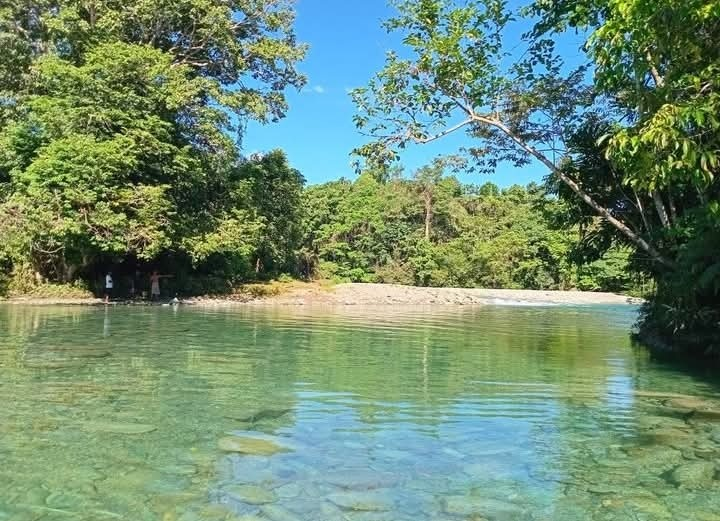
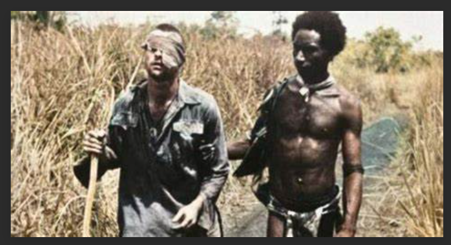

About Oro Province
Explore the rich traditions, breathtaking landscapes, and deep history of Oro Province, Papua New Guinea.
Explore the rich traditions, breathtaking landscapes, and deep history of Oro Province, Papua New Guinea.
Oro Province is home to breathtaking landscapes, rich traditions, and a diverse culture. From pristine coastlines to lush rainforests, the province offers visitors a unique experience filled with history and natural beauty.

Oro Province holds deep historical roots, known for its role in World War II, vibrant indigenous heritage, and centuries-old traditions passed down through generations.

The people of Oro Province take pride in their art, music, dance, and storytelling. The annual festivals showcase the colorful traditions that make the province unique.